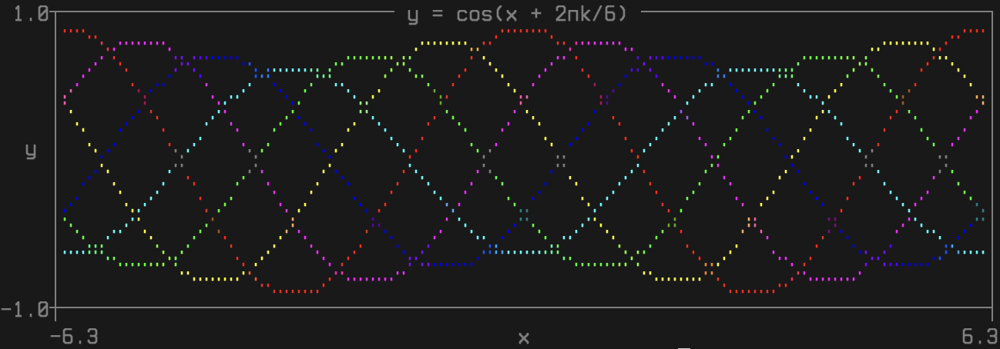
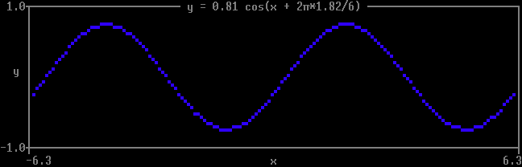

Quickstart
Install:
pip install git+https://github.com/matomatical/matthewplotlib.gitImport the library:
import matthewplotlib as mpConstruct a plot:
import numpy as np
xs = np.linspace(-2*np.pi, +2*np.pi, 156)
plot = mp.axes(
mp.scatter(
(xs, 1.0 * np.cos(xs), "red"),
(xs, 0.9 * np.cos(xs - 0.33 * np.pi), "magenta"),
(xs, 0.8 * np.cos(xs - 0.66 * np.pi), "blue"),
(xs, 0.7 * np.cos(xs - 1.00 * np.pi), "cyan"),
(xs, 0.8 * np.cos(xs - 1.33 * np.pi), "green"),
(xs, 0.9 * np.cos(xs - 1.66 * np.pi), "yellow"),
width=75,
height=10,
yrange=(-1,1),
),
title=" y = cos(x + 2πk/6) ",
xlabel="x",
ylabel="y",
)Print to terminal:
print(plot)
Export to PNG image:
plot.saveimg("images/quickstart.png")
Animated version:
import time
import numpy as np
import matthewplotlib as mp
x = np.linspace(-2*np.pi, +2*np.pi, 150)
plot = None
while True:
k = (time.time() % 3) * 2
A = 0.85 + 0.15 * np.cos(k)
y = A * np.cos(x - 2*np.pi*k/6)
c = mp.rainbow(1-k/6)
if plot is not None:
print(-plot, end="")
plot = mp.axes(
mp.scatter(
(x, y, c),
width=75,
height=10,
yrange=(-1,1),
),
title=f" y = {A:.2f} cos(x + 2π*{k:.2f}/6) ",
xlabel="x",
ylabel="y",
)
print(plot)
time.sleep(1/20)